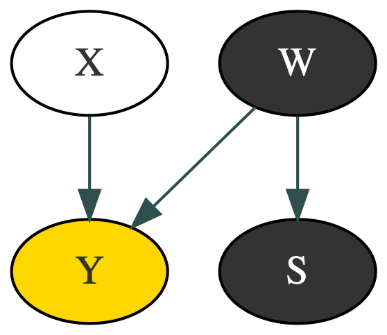

Exposing Selection Bias
P(x) = 0.2
P(w) = 0.5
P(y|x, w) = 0.1
P(y|x, w') = 0.5
P(y|x', w) = 0.5
P(y|x', w') = 0.5
Variables
Var
Description
X
Exercise
x is ≥ 3 hrs/wk
x is < 3 hrs/wk
Y
Happiness
W
Wealth
w is ≥ poverty
w' is < poverty
S
Selection
